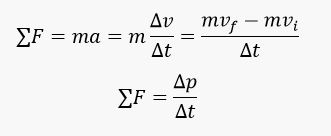

Linear Momentum and Collision
-
Momentum
- Linear Momentum (p) of a body is the product of its mass (m) and velocity (v):
- Linear momentum = (mass of body) (velocity of body

- Momentum is a vector quantity whose direction is that of the velocity. The units of momentum are kg.m/s in the SI.
- Momentum can be expressed in component form
- inear momentum = (mass of body) (velocity of body

- Newton's Second Law and Momentum.
- Newton's Second Law can be used to relate the momentum of a particle to the resultant force acting on it.
- 
- The time rate of change of the linear momentum of a particle is equal to the net force acting on the particle. The momentum of a system changes if a net force from the environment acts on the system.
-
Impulse Momentum Theorem
- The change in the momentum of a particle is equal to the impulse (I) of the new force acting on the particle.
- Impulse = change in momentum

- From:

- Thus, an impulse is also defined as the product of a force (F) and the time interval (Δt) over which the force acts:

- Impulse is a vector quantity whose direction is that of the force. Its units are N.s in the SI.
- Momentum is a vector quantity whose direction is that of the velocity. The units of momentum are kg.m/s in the SI.
- Conservation of Linear Momentum: If the net external force acting on a system of objects is zero, the vector sum of the momenta of the objects will remain constant.
-
Collision
- In Collisions and Explosions - the vector sum of the momenta just before the event equals the vector sum of the momenta just after the event. The vector sum of the momenta of the objects involved does not change during the collision or explosion.
- Thus, when two bodies of masses m1, and m2 collide,
- Total momentum before impact = Total momentum after impact
- where u1 and u2 are the velocities before impact, and v1 and v2 are the velocities after.
- Oblique Collision
- The sum of the momentum before collision along the x- axis is equal to the sum of
the momentum after collision along the x – axis.

- and similarly for the y- and z-axes.

- Perfectly Elastic Collision is one in which the sum of the translational kinetic energies of the objects is not changed during the collision. In the case of two bodies,
- Coefficient of Restitution: For any collision between two bodies in which the bodies move only along a single straight line (e.g., the x-axis), a coefficient of restitution e is defined. It is a pure number given by

- where u1x and u2x are values before impact, and v1x and v2x are values after impact. Notice that |u1x - u2x| is the relative speed of approach and |v2x - v1x| is the relative speed of recession
- For a perfectly elastic collision, e = 1.
- For inelastic collisions, e
- If the bodies stick together after collision, e = 0.
-
Sample Problems
- 1. A 2-kg brick is moving at a speed of 6m/s. How large a force F is needed to stop the brick in a time of 7x10-4 s?
- 2. How long does it take a 2000-Kg car to stop from a velocity of 35 m/s if a braking force of 4000 Newtons is used?
- 3. An object of mass 4 Kg is moving towards the east at a velocity of 6 meters per second. It collides and sticks to a 6-Kg object moving with a velocity of 5 meters per second in the same direction. How much kinetic energy was lost in the collision?
- 4. Two objects A and B of masses 1 and 3 Kg are held by a compressed massless spring and are at rest. When the spring is released, object A moves to the left with a velocity of 9 m/s. What is the velocity (magnitude and direction) of object B?
- 5. A 2-Kilogram object slides, on a smooth surface, towards the north at a velocity of 5 meters per second. The object hits a fixed pole and is deflected from north to east by an angle of 60° and has a velocity of 5 meters per second. The change in the magnitude of the northward component of the moment of the object is
-
Solutions
- 1. The answer is 17142
Solution:
force = rate of change of momentum
F = 2 * 6/(7*10^-4)
- 2. The answer is 17.5 s
Solution:
Δ t = 2000 |0 - 35| / 4000 = 17.5 seconds
- 3. The answer is 1.2 J
Solution:
momentum
Before collision: p1 = 4×6 + 6×5 = 54 Kg.m/s
After collision: p2 = (4 + 6) v2 ; v2 is the velocity of the two objects together after collision
momentum is conserved: 54 = 10 v2
v2 = 5.4 m/s
Kinetic energy
Before collision: K1 = (1/2) (4) 62 + (1/2) (6) 52 = 147 J
After collision: K2 = (1/2) (4 + 6) 5.42 = 145.8 J
Change in kinetic energy: K2 - K1 = 145.8 - 147 = - 1.2 J
1.2 J of kinetic energy was lost.
- 4. The answer is 3 m/s to the right
Solution:
Momentum before collision: p1 = 0 Kg.m/s (both objects at rest)
We assume an object moving to the right is moving in the positive direction.
Momentum after collision: p2 = 1 (-9) + 3 (v2) = - 9 + 3 v2; v2 is the velocity of object B
momentum is conserved: 0 = - 9 + 3 v2
v2 = 3 m/s and B moving to the right
- 5. The answer is -5 Kg.m/s
Solution:
Momentum before hitting the pole: p1 = m v = 2 × 5 = 10 K.m/s one component
(only) to the north
Momentum after hitting the pole: 2 components: to the north p2n = 2 × 5 cos (60°) to the east: p2e = 2 × 5 sin (60°)
Change in magnitude of components: p2n - p1 = 2 × 5 cos (60°) - p1 = 5 - 10 = -5 Kg.m/s
-
-